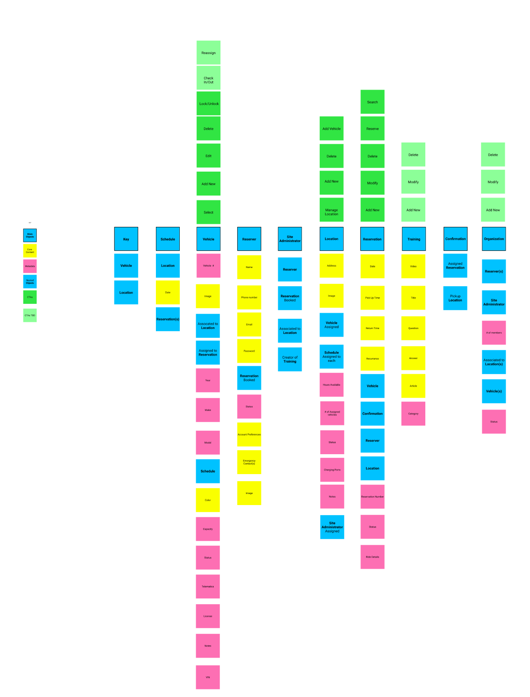
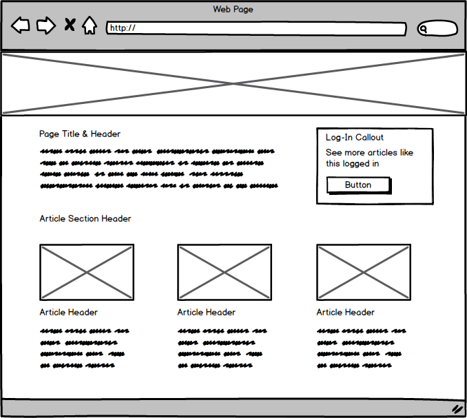

Car Sharing Platform
Overview
The purpose of this project was to design a mobile responsive car sharing app that and would provide users a frictionless reservation process and administrative management.
Goal
Enable users to easily reserve and manage reservations, and provide easy administrative management capabilities.
Role
Lead UX/UI designer and researcher.
Responsibility
Design wireframes/mockups, conduct user interviews, create information architecture.
Timeline
The project timeline was 5 weeks.
The Project:
The City of Madison provides a fleet of vehicles for employees to use for work and carpooling, however their current reservation system had a number of pitfalls including not having an elegant way to swap reservations, housing physical keys in multiple locations, and poor administrative oversight. Furthermore the city was intending to upgrade their vehicles to a new electric fleet;
The car sharing platform would serve as an initial solution to the reservation and administrative problems by addressing reservation failures, keyless operation, and improving communications to users. Mobile22 intended to partner with a third party software company to provide the a keyless entry, telematics, and vehicle operation.
Defining Scope:
There is a lot of raw potential with a car sharing platform being built from the ground up especially in future opportunities, however working with leadership and stakeholders, the following minimum requirements were defined:
- Platform users can reserve, edit, and swap car reservations
- Lock/Unlock and operate a vehicle without needing a physical key
- Provide SMS communications and updates regarding reservations
- Allow administrators to add, remove, and edit vehicles/garage locations
- Give administrators access to reservation records and fleet visibility
Do Your Homework and the Test is Easy
Researching
Understanding what wasn’t working with the current system became the priority.
The team met with the city’s car share administrator, who gave a demonstration of the booking system and her typical day to day tasks; we were able to record the interview, which became instrumental in defining how we could improve the experience and allowed us to remain empathetic.
We mapped out the current user flows for booking and changing reservations as well to locate pain points.

Gaining Alignment with Personas
After doing research, I worked on creating proto-personas with our team as an alignment exercise to make sure everyone was on the same page. Our identified personas were a city employee, and a platform administrator.
Toby
Role: City Employee
Toby is an active community member and city employee looking to carpool with others from the far east side to downtown. They first heard about carpooling over lunch with coworkers. They have are seeking a rotating schedule with 2 others and reserve every 3rd week.
Raquel
Role: City Fleet Administrator
Raquel is a City car fleet administrator. Day to day she manages the vehicles, garage locations, and manual re-scheduling of reservations that have already been made. She often has to reach out to drivers to let them know a vehicle is no longer avaialble.
Trying Something New
I also worked with a more senior designer to create an OOUX board for this project (object oriented user experience).What’s most helpful about OOUX is that it helps define the objects that users will interact with and in turn the objects that surround the problems they face.
Not only was it helpful for architecting a better experience, it was also helpful for working with developers to help them understand objects and components as they might be built.
Proofing Out the Concept
Wireframes
With research accomplished, wireframes were created to concept the improved workflows. The laid groundwork of the personas, OOUX, and recorded user interviews helped make every decision well thought out and justified.
What changed?
The booking process was simplified in a few different ways. First and foremost, by creating a home page that focused on one main thing: booking and identifying reservations. The current system made the user read through a wall of tips and information before finding the button for booking a reservation.
Secondly I also wanted to take the labor out of making a reservation. The solution: The user only needs to input a date and time and the platform would only return vehicles available for the time rather than make the user manually find a time to pick
Making Mangement Easier
For the administrative side, we noted that the city admin spent a lot of her time tracking down rides, vehicles, and locations, and in many instances, reassigning vehicles manually. In the proposed solution, that was directly addressed by creating records for rides and having dedicated sections for rides, locations etc. directly searchable.
The platform would also manage re-booking and communication with the reserver, rather than having the admin need to reach out manually.
Put Your Best Foot Forward
Hi-Fidelity Mockups
After working through the concepts and iterating with leadership and the product team, I worked on creating some hi fidelity visuals for presentation.

Project Conclusion & Takeaways
"This is Going To Solve What Just Happened"
5 weeks after the initial kickoff meeting I presented the work to the city that I had up until that point. This included a selection of 30+ low fidelity wireframes as well as 7 high fidelity mockups that highlighted the dual solution for car reservers and administrators. The solution was well met, because it directly addressed the core issues that were vocalized, including some that were not.
During the meeting, the audience asked us to hold for 3 min. They were taking a call with someone that needed to swap a reservation, which the current system was unable to do. It was really powerful to hear that they were looking forward to piloting with the proposed solution because “this is going to help solve what just happened.”
Research Pays in Dividends
One of the main conclusions that I come back to with this project is how much more streamlined the design process is down the road with research. Much of the iteration that was done on this project were small pivots rather than big turns. Time was well spent planning with personas and user interviewing because we were able to zero in on pain points rather than assume pain points to solve.
Collabortion is Important for the Process
This project was worked on during the Covid 19 pandemic. Working remote for some had become a frustration for staying aligned on progress and ideating. I did my best to remedy this by utilizing online collaboration tools such as Mirio for group whiteboarding, and Figma, for commenting on designs as they progressed. Although I was the primary lead on the design, it was a team effort between UX, Product, Leadership, and the city stakeholders to actualize the solution.